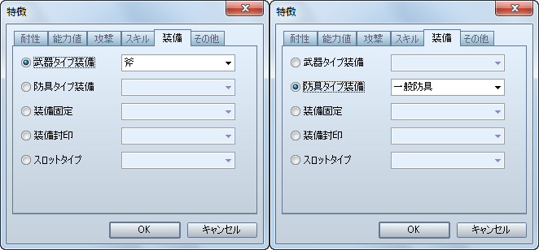
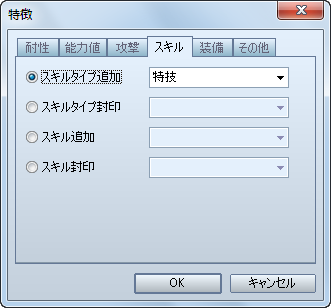

在 VX 战斗中可以设置与被敌方攻击的几率有关的队伍位置，在 VA 中取消了这个功能。
不过作为代替，加入了可设置角色受到攻击几率的方案。
[角色/职业]特性 - 能力 - 特殊能力 - 受到攻击几率
| VX 的设置 | VA 的设置 |
| 前卫 | 100% |
| 中卫 | 75% |
| 后卫 | 50% |
和 VX 不同，在 VA 中并非设置角色可以装备的一个一个装备，而是可以角色的装备类型，例如设置角色是否能装备[剑]或[盾]。
[职业]特性 - 装备 - 装备武器类型/装备护甲类型

设置伴随属性的攻击对角色的有效度。
[角色/职业]特性 - 抗性 - 属性抗性

| VX 的设置 | VA 的设置 |
| A | 200% |
| B | 150% |
| C | 100% 或不设置 |
| D | 50% |
| E | 0% |
| F | 取消 |
设置角色被附加各种状态时的成功率。
[角色/职业]特性 - 抗性 - 状态抗性

| VX的设置 | VA的设置 |
| A | 100% |
| B | 80% |
| C | 60% |
| D | 40% |
| E | 20% |
| F | 0% |
 在 VA 中，使用技能的战斗指令不像 VX 只有一个[特技]，而是使用如[特技]、[魔法]之类的[技能类型]来作区分。而在菜单中点选[技能]指令之后，就可以选择[技能类型]了。
在 VA 中，使用技能的战斗指令不像 VX 只有一个[特技]，而是使用如[特技]、[魔法]之类的[技能类型]来作区分。而在菜单中点选[技能]指令之后，就可以选择[技能类型]了。
所以如果需要定制战斗中技能指令，请设置一个自定义的技能类型。
[用语]技能类型

但是即使角色已经学会了技能，指令中也不会显示[技能类型]。所以需要显示（需要使用）的技能类型请在特性里设置好。
[角色/职业]特性 - 技能 - 添加技能类型
